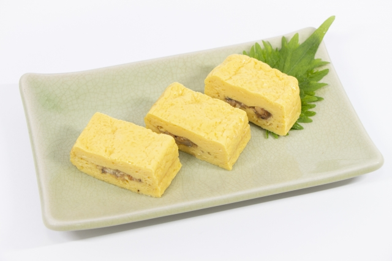

Tamagoyaki (卵焼き)

Tamagoyaki is a Japanese omelette made by rolling together thin layers of seasoned egg in a frying pan.
Ingredients
- 4 eggs
- 2 tablespoons dashi soup
- 1 tablespoon soy sauce
- 1 tablespoon mirin
- 1 tablespoon sugar
- 1 tablespoon vegetable oil
Directions
- Beat eggs in a bowl. Add dashi, soy sauce, mirin, and sugar. Mix well.
- Heat oil in a rectangular frying pan over medium heat.
- Pour a thin layer of egg mixture into the pan. Cook until set but still slightly runny.
- Roll the cooked egg from one end of the pan to the other.
- Push the rolled egg to the other end of the pan. Add more egg mixture to the pan.
- Lift the rolled egg and let the new mixture flow underneath. Cook until set but still slightly runny.
- Roll the cooked egg from one end of the pan to the other.
- Repeat steps 5-7 until all the egg mixture is used.
- Remove the rolled egg from the pan and let cool slightly. Slice and serve.
Back to Top
Back to Recipes Home